정보처리기사 (2021-03-07 기출문제)
1과목: 소프트웨어 설계
1. 운영체제 분석을 위해 리눅스에서 버전을 확인하고자 할 때 사용되는 명령어는?(문제 오류로 가답안 발표시 4번으로 발표되었지만 확정답안 발표시 2, 4번이 정답처리 되었습니다. 여기서는 가답안인 4번을 누르시면 정답 처리 됩니다.)
- ls
- cat
- pwd
- uname
(정답률: 86%)

2. 통신을 위한 프로그램을 생성하여 포트를 할당하고, 클라이언트의 통신 요청 시 클라이언트와 연결하는 내·외부 송·수신 연계기술은?
- DB링크 기술
- 소켓 기술
- 스크럼 기술
- 프로토타입 기술
(정답률: 81%)
3. 객체지향 개념에서 연관된 데이터와 함수를 함께 묶어 외부와 경계를 만들고 필요한 인터페이스만을 밖으로 드러내는 과정은?
- 메시지(Message)
- 캡슐화(Encapsulation)
- 다형성(Polymorphism)
- 상속(Inheritance)
(정답률: 92%)
4. GoF(Gangs of Four) 디자인 패턴의 생성패턴에 속하지 않는 것은?
- 추상 팩토리(Abstract Factory)
- 빌더(Builder)
- 어댑터(Adapter)
- 싱글턴(Singleton)
(정답률: 73%)
5. 응용프로그램의 프로시저를 사용하여 원격 프로시저를 로컬 프로시저처럼 호출하는 방식의 미들웨어는?
- WAS(Web Application Server)
- MOM(Message Oriented Middleware)
- RPC(Remote Procedure Call)
- ORB(Object Request Broker)
(정답률: 83%)
6. 바람직한 소프트웨어 설계 지침이 아닌 것은?
- 모듈의 기능을 예측할 수 있도록 정의한다.
- 이식성을 고려한다.
- 적당한 모듈의 크기를 유지한다.
- 가능한 모듈을 독립적으로 생성하고 결합도를 최대화한다.
(정답률: 92%)
7. 객체지향 분석 방법론 중 Coad-Yourdon 방법에 해당하는 것은?
- E-R 다이어그램을 사용하여 객체의 행위를 데이터 모델링하는데 초점을 둔 방법이다.
- 객체, 동적, 기능 모델로 나누어 수행하는 방법이다.
- 미시적 개발 프로세스와 거시적 개발 프로세스를 모두 사용하는 방법이다.
- Use-Case를 강조하여 사용하는 방법이다.
(정답률: 73%)
8. 다음은 어떤 프로그램 구조를 나타낸다. 모듈 F에서의 fan-in과 fan-out의 수는 얼마인가?
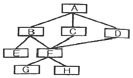
- fan-in : 2, fan-out : 3
- fan-in : 3, fan-out : 2
- fan-in : 1, fan-out : 2
- fan-in : 2, fan-out : 1
(정답률: 88%)
9. 현행 시스템 분석에서 고려하지 않아도 되는 항목은?
- DBMS 분석
- 네트워크 분석
- 운영체제 분석
- 인적 자원 분석
(정답률: 85%)
10. 분산 컴퓨팅 환경에서 서로 다른 기종 간의 하드웨어나 프로토콜, 통신환경 등을 연결하여 응용프로그램과 운영환경 간에 원만한 통신이 이루어질 수 있게 서비스를 제공하는 소프트웨어는?
- 미들웨어
- 하드웨어
- 오픈허브웨어
- 그레이웨어
(정답률: 93%)
11. CASE(Computer Aided Software Engineering)에 대한 설명으로 틀린 것은?
- 소프트웨어 모듈의 재사용성이 향상된다.
- 자동화된 기법을 통해 소프트웨어 품질이 향상된다.
- 소프트웨어 사용자들에게 사용 방법을 신속히 숙지시키기 위해 사용된다.
- 소프트웨어 유지보수를 간편하게 수행할 수 있다.
(정답률: 85%)
12. UML(Unified Modeling Language)에 대한 설명 중 틀린 것은?
- 기능적 모델은 사용자 측면에서 본 시스템 기능이며, UML에서는 Use case Diagram을 사용한다.
- 정적 모델은 객체, 속성, 연관관계, 오퍼레이션의 시스템의 구조를 나타내며, UML에서는 Class Diagram을 사용한다.
- 동적 모델은 시스템의 내부 동작을 말하며, UML에서는 Sequence Diagram, State Diagram, Activity Diagram을 사용한다.
- State Diagram은 객체들 사이의 메시지 교환을 나타내며, Sequence Diagram은 하나의 객체가 가진 상태와 그 상태의 변화에 의한 동작순서를 나타낸다.
(정답률: 66%)
13. 기본 유스케이스 수행 시 특별한 조건을 만족할 때 수행하는 유스케이스는?
- 연관
- 확장
- 선택
- 특화
(정답률: 63%)
14. 다음 중 요구사항 모델링에 활용되지 않는 것은?
- 애자일(Agile) 방법
- 유스케이스 다이어그램(Use Case Diagram)
- 시컨스 다이어그램(Sequence Diagram)
- 단계 다이어그램(Phase Diagram)
(정답률: 66%)
15. 디자인 패턴을 이용한 소프트웨어 재사용으로 얻어지는 장점이 아닌 것은?
- 소프트웨어 코드의 품질을 향상시킬 수 있다.
- 개발 프로세스를 무시할 수 있다.
- 개발자들 사이의 의사소통을 원활하게 할 수 있다.
- 소프트웨어의 품질과 생산성을 향상시킬 수 있다.
(정답률: 94%)
16. 럼바우(Rumbaugh) 분석기법에서 정보모델링이라고도 하며, 시스템에서 요구되는 객체를 찾아내어 속성과 연산 식별 및 객체들 간의 관계를 규정하여 다이어그램을 표시하는 모델링은?
- Object
- Dynamic
- Function
- Static
(정답률: 77%)
17. 소프트웨어를 개발하기 위한 비즈니스(업무)를 객체와 속성, 클래스와 멤버, 전체와 부분 등으로 나누어서 분석해 내는 기법은?
- 객체지향 분석
- 구조적 분석
- 기능적 분석
- 실시간 분석
(정답률: 64%)
18. 애자일 소프트웨어 개발 기법의 가치가 아닌 것은?
- 프로세스의 도구보다는 개인과 상호작용에 더 가치를 둔다.
- 계약 협상보다는 고객과의 협업에 더 가치를 둔다.
- 실제 작동하는 소프트웨어보다는 이해하기 좋은 문서에 더 가치를 둔다.
- 계획을 따르기보다는 변화에 대응하는 것에 더 가치를 둔다.
(정답률: 90%)
19. UML 다이어그램 중 시스템 내 클래스의 정적 구조를 표현하고 클래스와 클래스, 클래스의 속성 사이의 관계를 나타내는 것은?
- Activity Diagram
- Modea Diagram
- State Diagram
- Class Diagram
(정답률: 81%)
20. 소프트웨어 설계시 제일 상위에 있는 main user function에서 시작하여 기능을 하위 기능들로 분할해 가면서 설계하는 방식은?
- 객체 지향 설계
- 데이터 흐름 설계
- 상향식 설계
- 하향식 설계
(정답률: 88%)
2과목: 소프트웨어 개발
21. 구현 단계에서의 작업 절차를 순서에 맞게 나열한 것은?
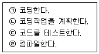
- ㉠-㉡-㉢-㉣
- ㉡-㉠-㉣-㉢
- ㉢-㉠-㉡-㉣
- ㉣-㉡-㉠-㉢
(정답률: 89%)
22. 다음 자료에 대하여 “Selection Sort”를 사용하여 오름차순으로 정렬한 경우 PASS 3의 결과는?
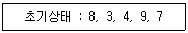
- 3, 4, 7, 9, 8
- 3, 4, 8, 9, 7
- 3, 8, 4, 9, 7
- 3, 4, 7, 8, 9
(정답률: 60%)
23. 하향식 통합시험을 위해 일시적으로 필요한 조건만을 가지고 임시로 제공되는 시험용 모듈은?
- Stub
- Driver
- Procedure
- Function
(정답률: 83%)
24. 다음 전위식(prefix)을 후위식(postfix)으로 옳게 표현한 것은?
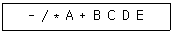
- A B C + D / * E -
- A B * C D / + E -
- A B * C + D / E -
- A B C + * D / E -
(정답률: 65%)
25. 그래프의 특수한 형태로 노드(Node)와 선분(Branch)으로 되어 있고, 정점 사이에 사이클(Cycle)이 형성되어 있지 않으며, 자료 사이의 관계성이 계층 형식으로 나타나는 비선형 구조는?
- tree
- network
- stack
- distributed
(정답률: 86%)
26. 스택에 대한 설명으로 틀린 것은?
- 입출력이 한쪽 끝으로만 제한된 리스트이다.
- Head(front)와 Tail(rear)의 2개 포인터를 갖고 있다.
- LIFO 구조이다.
- 더 이상 삭제할 데이터가 없는 상태에서 데이터를 삭제하면 언더플로(Underflow)가 발생한다.
(정답률: 75%)
27. 디지털 저작권 관리(DRM)에 사용되는 기술요소가 아닌 것은?
- 키관리
- 방화벽
- 암호화
- 크랙방지
(정답률: 83%)
28. 여러 개의 선택 항목 중 하나의 선택만 가능한 경우 사용하는 사용자 인터페이스(UI)요소는?
- 토글 버튼
- 텍스트 박스
- 라디오 버튼
- 체크 박스
(정답률: 79%)
29. 소프트웨어의 일부분을 다른 시스템에서 사용할 수 있는 정도를 의미하는 것은?
- 신뢰성(Reliability)
- 유지보수성(Maintainability)
- 가시성(Visibility)
- 재사용성(Reusability)
(정답률: 86%)
30. 자료구조에 대한 설명으로 틀린 것은?
- 큐는 비선형구조에 해당한다.
- 큐는 First In – First Out 처리를 수행한다.
- 스택은 Last In – First out 처리를 수행한다.
- 스택은 서브루틴 호출, 인터럽트 처리, 수식 계산 및 수식 표기법에 응용된다.
(정답률: 80%)
31. 다음 중 블랙박스 검사 기법은?
- 경계값 분석
- 조건 검사
- 기초 경로 검사
- 루프 검사
(정답률: 78%)
32. 이진 검색 알고리즘에 대한 설명으로 틀린 것은?
- 탐색 효율이 좋고 탐색 시간이 적게 소요된다.
- 검색할 데이터가 정렬되어 있어야 한다.
- 피보나치 수열에 따라 다음에 비교할 대상을 선정하여 검색한다.
- 비교횟수를 거듭할 때마다 검색 대상이 되는 데이터의 수가 절반으로 줄어든다.
(정답률: 67%)
33. 소프트웨어 품질목표 중 쉽게 배우고 사용할 수 있는 정도를 나타내는 것은?
- Correctness
- Reliability
- Usability
- Integrity
(정답률: 86%)
34. 테스트 케이스에 일반적으로 포함되는 항목이 아닌 것은?
- 테스트 조건
- 테스트 데이터
- 테스트 비용
- 예상 결과
(정답률: 82%)
35. 소프트웨어 설치 매뉴얼에 포함될 항목이 아닌 것은?
- 제품 소프트웨어 개요
- 설치 관련 파일
- 프로그램 삭제
- 소프트웨어 개발 기간
(정답률: 89%)
36. 소프트웨어 형상관리(Configuration management)에 관한 설명으로 틀린 것은?
- 소프트웨어에서 일어나는 수정이나 변경을 알아내고 제어하는 것을 의미한다.
- 소프트웨어 개발의 전체 비용을 줄이고, 개발 과정의 여러 방해 요인이 최소화되도록 보증하는 것을 목적으로 한다.
- 형상관리를 위하여 구성된 팀을 “chief programmer team”이라고 한다.
- 형상관리의 기능 중 하나는 버전 제어 기술이다.
(정답률: 69%)
37. 퀵 정렬에 관한 설명으로 옳은 것은?
- 레코드의 키 값을 분석하여 같은 값끼리 그 순서에 맞는 버킷에 분배하였다가 버킷의 순서대로 레코드를 꺼내어 정렬한다.
- 주어진 파일에서 인접한 두 개의 레코드 키 값을 비교하여 그 크기에 따라 레코드 위치를 서로 교환한다.
- 레코드의 많은 자료 이동을 없애고 하나의 파일을 부분적으로 나누어 가면서 정렬한다.
- 임의의 레코드 키와 매개변수(h)값만큼 떨어진 곳의 레코드 키를 비교하여 서로 교환해 가면서 정렬한다.
(정답률: 53%)
38. 해싱 함수(Hashing Function)의 종류가 아닌 것은?
- 제곱법(mid-square)
- 숫자분석법(digit analysis)
- 개방주소법(open addressing)
- 제산법(division)
(정답률: 65%)
39. 필드 테스팅(field testing)이라고도 불리며 개발자 없이 고객의 사용 환경에 소프트웨어를 설치하여 검사를 수행하는 인수검사 기법은?
- 베타 검사
- 알파 검사
- 형상 검사
- 복구 검사
(정답률: 81%)
40. 다음 트리를 Preorder 운행법으로 운행할 경우 다섯 번째로 탐색되는 것은?
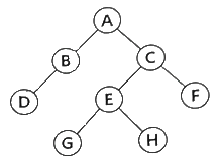
- C
- E
- G
- H
(정답률: 87%)
3과목: 데이터베이스 구축
41. 결과 값이 아래와 같을 때 SQL 질의로 옳은 것은?
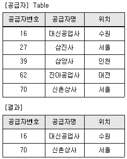
- SELECT * FROM 공급자 WHERE
공급자명 LIKE '%신%'; - SELECT * FROM 공급자 WHERE
공급자명 LIKE '%대%'; - SELECT * FROM 공급자 WHERE
공급자명 LIKE '%사%'; - SELECT * FROM 공급자 WHERE
공급자명 IS NOT NULL;
(정답률: 88%)
42. 다음에서 설명하는 스키마(Schema)는?
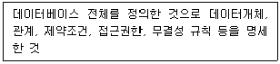
- 개념 스키마
- 내부 스키마
- 외부 스키마
- 내용 스키마
(정답률: 78%)
43. 데이터베이스 설계 단계 중 저장 레코드 양식설계, 레코드 집중의 분석 및 설계, 접근 경로 설계와 관계되는 것은?
- 논리적 설계
- 요구 조건 분석
- 개념적 설계
- 물리적 설계
(정답률: 66%)
44. 다음 릴레이션의 카디널리티와 차수가 옳게 나타낸 것은?
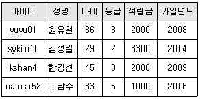
- 카디널리티 : 4, 차수 : 4
- 카디널리티 : 4, 차수 : 6
- 카디널리티 : 6, 차수 : 4
- 카디널리티 : 6, 차수 : 6
(정답률: 76%)
45. 다음과 같은 트랙잭션의 특성은?
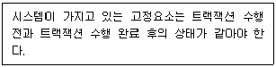
- 원자성(atomicity)
- 일관성(consistency)
- 격리성(isolation)
- 영속성(durability)
(정답률: 79%)
46. 병행제어의 로킹(Locking) 단위에 대한 설명으로 옳지 않은 것은?
- 데이터베이스, 파일, 레코드 등은 로킹 단위가 될 수 있다.
- 로킹 단위가 작아지면 로킹 오버헤드가 증가한다.
- 한꺼번에 로킹할 수 있는 단위를 로킹단위라고 한다.
- 로킹 단위가 작아지면 병행성 수준이 낮아진다.
(정답률: 83%)
47. 뷰(VIEW)에 대한 설명으로 옳지 않은 것은?
- DBA는 보안 측면에서 뷰를 활용할 수 있다.
- 뷰 위에 또 다른 뷰를 정의할 수 있다.
- 뷰에 대한 삽입, 갱신, 삭제 연산 시 제약사항이 따르지 않는다.
- 독립적인 인덱스를 가질 수 없다.
(정답률: 79%)
48. 다음 정의에서 말하는 기본 정규형은?
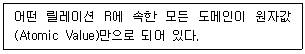
- 제1정규형(1NF)
- 제2정규형(2NF)
- 제3정규형(3NF)
- 보이스/코드 정규형(BCNF)
(정답률: 84%)
49. 릴레이션 R1에 속한 애튜리뷰트의 조합인 외래키를 변경하려면 이를 참조하고 있는 릴레이션 R2의 기본키도 변경해야 하는데 이를 무엇이라 하는가?
- 정보 무결성
- 고유 무결성
- 널 제약성
- 참조 무결성
(정답률: 88%)
50. 시스템 카탈로그에 대한 설명으로 틀린 것은?
- 시스템 카탈로그의 갱신은 무결성 유지를 위하여 SQL을 이용하여 사용자가 직접 갱신하여야 한다.
- 데이터베이스에 포함되는 데이터 객체에 대한 정의나 명세에 대한 정보를 유지관리한다.
- DBMS가 스스로 생성하고 유지하는 데이터베이스 내의 특별한 테이블의 집합체이다.
- 카탈로그에 저장된 정보를 메타 데이터라고도 한다.
(정답률: 80%)
51. 조건을 만족하는 릴레이션의 수평적 부분집합으로 구성하며, 연산자의 기호는 그리스 문자 시그마(σ)를 사용하는 관계대수 연산은?
- Select
- Project
- Join
- Division
(정답률: 75%)
52. SQL에서 스키마(schema), 도메인(domain), 테이블(table), 뷰(view), 인덱스(index)를 정의하거나 변경 또는 삭제할 때 사용하는 언어는?
- DML(Data Manipulation Language)
- DDL(Data Definition Language)
- DCL(Data Control Language)
- IDL(Interactive Data Language)
(정답률: 77%)
53. 정규화를 거치지 않아 발생하게 되는 이상(anomaly) 현상의 종류에 대한 설명으로 옳지 않은 것은?
- 삭제 이상이란 릴레이션에서 한 튜플을 삭제할 때 의도와는 상관없는 값들도 함께 삭제되는 연쇄 삭제 현상이다.
- 삽입 이상이란 릴레이션에서 데이터를 삽입할 때 의도와는 상관없이 원하지 않는 값들도 함께 삽입되는 현상이다.
- 갱신 이상이란 릴레이션에서 튜플에 있는 속성값을 갱신할 때 일부 튜플의 정보만 갱신되어 정보에 모순이 생기는 현상이다.
- 종속 이상이란 하나의 릴레이션에 하나 이상의 함수적 종속성이 존재하는 현상이다.
(정답률: 73%)
54. 관계 데이터 모델에서 릴레이션(relation)에 관한 설명으로 옳은 것은?
- 릴레이션의 각 행을 스키마(schema)라 하며, 예로 도서 릴레이션을 구성하는 스키마에서는 도서번호, 도서명, 저자, 가격 등이 있다.
- 릴레이션의 각 열을 튜플(tuple)이라 하며, 하나의 튜플은 각 속성에서 정의된 값을 이용하여 구성된다.
- 도메인(domain)은 하나의 속성이 가질 수 있는 같은 타입의 모든 값의 집합으로 각 속성의 도메인은 원자값을 갖는다.
- 속성(attribute)은 한 개의 릴레이션의 논리적인 구조를 정의한 것으로 릴레이션의 이름과 릴레이션에 포함된 속성들의 집합을 의미한다.
(정답률: 66%)
55. 3NF에서 BCNF가 되기 위한 조건은?
- 이행적 함수 종속 제거
- 부분적 함수 종속 제거
- 다치 종속 제거
- 결정자이면서 후보 키가 아닌 것 제거
(정답률: 77%)
56. 데이터베이스 성능에 많은 영향을 주는 DBMS의 구성 요소로 테이블과 클러스터에 연관되어 독립적인 저장 공간을 보유하며, 데이터베이스에 저장된 자료를 더욱 빠르게 조회하기 위하여 사용되는 것은?
- 인덱스(Index)
- 트랙잭션(Transaction)
- 역정규화(Denormalization)
- 트리거(Trigger)
(정답률: 75%)
57. 아래의 SQL문을 실행한 결과는?
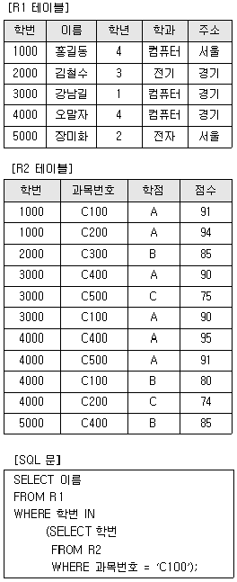
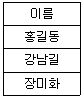
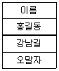
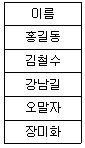
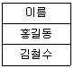
(정답률: 87%)
58. 『회원』테이블 생성 후 『주소』 필드(컬럼)가 누락되어 이를 추가하려고 한다. 이에 적합한 SQL명령어는?
- DELETE
- RESTORE
- ALTER
- ACCESS
(정답률: 88%)
59. 트랙잭션을 수행하는 도중 장애로 인해 손상된 데이터베이스를 손상되기 이전에 정상적인 상태로 복구시키는 작업은?
- Recovery
- Commit
- Abort
- Restart
(정답률: 85%)
60. E-R 다이어그램의 표기법으로 옳지 않은 것은?
- 개체타입 - 사각형
- 속성 - 타원
- 관계집합 - 삼각형
- 개체타입과 속성을 연결 – 선
(정답률: 85%)
4과목: 프로그래밍 언어 활용
61. 다음 중 응집도가 가장 높은 것은?
- 절차적 응집도
- 순차적 응집도
- 우연적 응집도
- 논리적 응집도
(정답률: 63%)
62. OSI 7계층에서 물리적 연결을 이용해 신뢰성 있는 정보를 전송하려고 동기화, 오류제어, 흐름제어 등의 전송에러를 제어하는 계층은?
- 데이터 링크 계층
- 물리 계층
- 응용 계층
- 표현 계층
(정답률: 71%)
63. 운영체제를 기능에 따라 분류할 경우 제어 프로그램이 아닌 것은?
- 데이터 관리 프로그램
- 서비스 프로그램
- 작업 제어 프로그램
- 감시 프로그램
(정답률: 68%)
64. IEEE 802.3 LAN에서 사용되는 전송매체 접속제어(MAC) 방식은?
- CSMA/CD
- Token Bus
- Token Ring
- Slotted Ring
(정답률: 66%)
65. 기억공간이 15K, 23K, 22K, 21K 순으로 빈 공간이 있을 때 기억장치 배치 전력으로 “First Fit”을 사용하여 17K의 프로그램을 적재할 경우 내부단편화의 크기는 얼마인가?
- 5K
- 6K
- 7K
- 8K
(정답률: 82%)
66. 교착상태가 발생할 수 있는 조건이 아닌 것은?
- Mutual exclusion
- Hold and wait
- Non-preemption
- Linear wait
(정답률: 60%)
67. IPv6에 대한 설명으로 틀린 것은?
- 멀티캐스팅(Multicast) 대신 브로드캐스트(Broadcast)를 사용한다.
- 보안과 인증 확장 헤더를 사용함으로써 인터넷 계층의 보안기능을 강화하였다.
- 애니캐스트(Anycast)는 하나의 호스트에서 그룹 내의 가장 가까운 곳에 있는 수신자에게 전달하는 방식이다.
- 128비트 주소체계를 사용한다.
(정답률: 77%)
68. TCP/IP 프로토콜에서 TCP가 해당하는 계층은?
- 데이터 링크 계층
- 네트워크 계층
- 트랜스포트 계층
- 세션 계층
(정답률: 60%)
69. C언어에서 변수로 사용할 수 없는 것은?
- data02
- int01
- _sub
- short
(정답률: 72%)
70. 다음 JAVA 코드 출력문의 결과는?
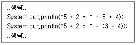
- 5 + 2 = 34<chal>5 + 2 = 34
- 5 + 2 + 3 + 4<chal>5 + 2 = 7
- 7 = 7<chal>7 + 7
- 5 + 2 = 34<chal>5 + 2 = 7
(정답률: 79%)
71. C언어에서 문자열을 정수형으로 변환하는 라이브러리 함수는?
- atoi( )
- atof( )
- itoa( )
- ceil( )
(정답률: 76%)
72. 운영체제의 가상기억장치 관리에서 프로세스가 일정 시간동안 자주 참조하는 페이지들의 집합을 의미하는 것은?
- Locality
- Deadlock
- Thrashing
- Working Set
(정답률: 72%)
73. 결합도가 낮은 것부터 높은 순으로 옳게 나열한 것은?
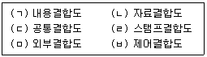
- (ㄱ) → (ㄴ) → (ㄹ) → (ㅂ) → (ㅁ) → (ㄷ)
- (ㄴ) → (ㄹ) → (ㅁ) → (ㅂ) → (ㄷ) → (ㄱ)
- (ㄴ) → (ㄹ) → (ㅂ) → (ㅁ) → (ㄷ) → (ㄱ)
- (ㄱ) → (ㄴ) → (ㄹ) → (ㅁ) → (ㅂ) → (ㄷ)
(정답률: 68%)
74. 다음 설명의 ㉠과 ㉡에 들어갈 내용으로 옳은 것은?
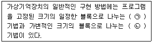
- ㉠ : Paging, ㉡ : Segmentation
- ㉠ : Segmentation, ㉡ : Allocation
- ㉠ : Segmentation, ㉡ : Compaction
- ㉠ : Paging, ㉡ : Linking
(정답률: 78%)
75. 라이브러리의 개념과 구성에 대한 설명 중 틀린 것은?
- 라이브러리란 필요할 때 찾아서 쓸 수 있도록 모듈화되어 제공되는 프로그램을 말한다.
- 프로그래밍 언어에 따라 일반적으로 도움말, 설치 파일, 샘플 코드 등을 제공한다.
- 외부 라이브러리는 프로그래밍 언어가 기본적으로 가지고 있는 라이브러리를 의미하며, 표준 라이브러리는 별도의 파일 설치를 필요로 하는 라이브러리를 의미한다.
- 라이브러리는 모듈과 패키지를 총칭하며, 모듈이 개별 파일이라면 패키지는 파일들을 모아 놓은 폴더라고 볼 수 있다.
(정답률: 84%)
76. C언어에서 산술 연산자가 아닌 것은?
- %
- *
- /
- =
(정답률: 80%)
77. UDP 특성에 해당되는 것은?
- 양방향 연결형 서비스를 제공한다.
- 송신중에 링크를 유지관리하므로 신뢰성이 높다.
- 순서제어, 오류제어, 흐름제어 기능을 한다.
- 흐름제어나 순서제어가 없어 전송속도가 빠르다.
(정답률: 75%)
78. JAVA에서 변수와 자료형에 대한 설명으로 틀린 것은?
- 변수는 어떤 값을 주기억 장치에 기억하기 위해서 사용하는 공간이다.
- 변수의 자료형에 따라 저장할 수 있는 값의 종류와 범위가 달라진다.
- char 자료형은 나열된 여러 개의 문자를 저장하고자 할 때 사용한다.
- boolean 자료형은 조건이 참인지 거짓인지 판단하고자 할 때 사용한다.
(정답률: 75%)
79. 다음은 파이썬으로 만들어진 반복문 코드이다. 이 코드의 결과는?
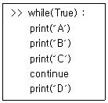
- A, B, C 출력이 반복된다.
- A, B, C 까지만 출력된다.
- A, B, C, D 출력이 반복된다.
- A, B, C, D 까지만 출력된다.
(정답률: 70%)
80. WAS(Web Application Server)가 아닌 것은?
- JEUS
- JVM
- Tomcat
- WebSphere
(정답률: 66%)
5과목: 정보시스템 구축관리
81. 다음 암호 알고리즘 중 성격이 다른 하나는?
- MD4
- MD5
- SHA-1
- AES
(정답률: 71%)
82. 크래커가 침입하여 백도어를 만들어 놓거나, 설정파일을 변경했을 때 분석하는 도구는?
- tripwire
- tcpdump
- cron
- netcat
(정답률: 73%)
83. 다음 내용이 설명하는 것은?
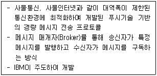
- GRID
- TELNET
- GPN
- MQTT
(정답률: 68%)
84. 나선형(Spiral) 모형의 주요 태스크에 해당되지 않는 것은?
- 버전 관리
- 위험 분석
- 개발
- 평가
(정답률: 71%)
85. 정보 보안을 위한 접근통제 정책 종류에 해당하지 않는 것은?
- 임의적 접근 통제
- 데이터 전환 접근 통제
- 강제적 접근 통제
- 역할 기반 접근 통제
(정답률: 59%)
86. LOC기법에 의하여 예측된 총 라인수가 36,000라인, 개발에 참여할 프로그래머가 6명, 프로그래머들의 평균 생산성이 월간 300라인일 때 개발에 소요되는 기간은?
- 5개월
- 10개월
- 15개월
- 20개월
(정답률: 88%)
87. 정형화된 분석 절차에 따라 사용자 요구사항을 파악, 문서화하는 체계적 분석방법으로 자료흐름도, 자료사전, 소단위명세서의 특징을 갖는 것은?
- 구조적 개발 방법론
- 객체지향 개발 방법론
- 정보공학 방법론
- CBD 방법론
(정답률: 61%)
88. 정보보호를 위한 암호화에 대한 설명으로 틀린 것은?
- 평문 – 암호화되기 전의 원본 메시지
- 암호문 – 암호화가 적용된 메시지
- 복호화 – 평문을 암호문으로 바꾸는 작업
- 키(Key) - 적절한 암호화를 위하여 사용하는 값
(정답률: 84%)
89. 다음 내용이 설명하는 것은?
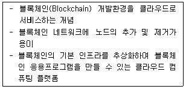
- OTT
- Baas
- SDDC
- Wi-SUN
(정답률: 69%)
90. 소프트웨어 비용 산정 기법 중 개발 유형으로 organic, semi-detach, embedded로 구분되는 것은?
- PUTNAM
- COCOMO
- FP
- SLIM
(정답률: 83%)
91. 다음 LAN의 네트워크 토폴로지는 어떤 형인가?
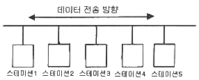
- 그물형
- 십자형
- 버스형
- 링형
(정답률: 88%)
92. 전기 및 정보통신기술을 활용하여 전력망을 지능화, 고도화함으로써 고품질의 전력서비스를 제공하고 에너지 이용효율을 극대화하는 전력망은?
- 사물 인터넷
- 스마트 그리드
- 디지털 아카이빙
- 미디어 빅뱅
(정답률: 75%)
93. 다음 내용이 설명하는 소프트웨어 개발 모형은?
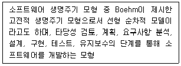
- 프로토타입 모형
- 나선형 모형
- 폭포수 모형
- RAD 모형
(정답률: 81%)
94. 스트림 암호화 방식의 설명으로 옳지 않은 것은?
- 비트/바이트/단어들을 순차적으로 암호화한다.
- 해쉬 함수를 이용한 해쉬 암호화 방식을 사용한다.
- RC4는 스트림 암호화 방식에 해당한다.
- 대칭키 암호화 방식이다.
(정답률: 48%)
95. 세션 하이재킹을 탐지하는 방법으로 거리가 먼 것은?
- FTP SYN SEGNENT 탐지
- 비동기화 상태 탐지
- ACK STORM 탐지
- 패킷의 유실 및 재전송 증가 탐지
(정답률: 41%)
96. 소프트웨어공학에 대한 설명으로 거리가 먼 것은?
- 소프트웨어공학이란 소프트웨어의 개발, 운용, 유지보수 및 파기에 대한 체계적인 접근 방법이다.
- 소프트웨어공학은 소프트웨어 제품의 품질을 향상시키고 소프트웨어 생산성과 작업 만족도를 증대시키는 것이 목적이다.
- 소프트웨어공학의 궁극적 목표는 최대의 비용으로 계획된 일정보다 가능한 빠른 시일 내에 소프트웨어를 개발하는 것이다.
- 소프트웨어공학은 신뢰성 있는 소프트웨어를 경제적인 비용으로 획득하기 위해 공학적 원리를 정립하고 이를 이용하는 것이다.
(정답률: 87%)
97. 소프트웨어 개발 방법론 중 CBD(Component Based Development)에 대한 설명으로 틀린 것은?
- 생산성과 품질을 높이고, 유지보수 비용을 최소화할 수 있다.
- 컴포넌트 제작 기법을 통해 재사용성을 향상시킨다.
- 모듈의 분할과 정복에 의한 하향식 설계방식이다.
- 독립적인 컴포넌트 단위의 관리로 복잡성을 최소화할 수 있다.
(정답률: 81%)
98. 정보 보안의 3요소에 해당하지 않는 것은?
- 기밀성
- 무결성
- 가용성
- 휘발성
(정답률: 86%)
99. 소셜 네트워크에서 악의적인 사용자가 지인 또는 특정 유명인으로 가장하여 활동하는 공격 기법은?(문제 오류로 가답안 발표시 1번으로 발표되었지만 확정답안 발표시 1, 2번이 정답처리 되었습니다. 여기서는 가답안인 1번을 누르시면 정답 처리 됩니다.)
- Evil Twin Attack
- Phishing
- Logic Bomb
- Cyberbullying
(정답률: 80%)
100. 공개키 암호에 대한 설명으로 틀린 것은?
- 10명이 공개키 암호를 사용할 경우 5개의 키가 필요하다.
- 복호화키는 비공개 되어 있다.
- 송신자는 수신자의 공개키로 문서를 암호화한다.
- 공개키 암호로 널리 알려진 알고리즘은 RSA가 있다.
(정답률: 74%)
"uname"은 리눅스 시스템에서 현재 운영체제의 정보를 확인하기 위해 사용되는 명령어입니다. 이 명령어를 사용하면 운영체제의 버전, 호스트 이름, 프로세서 타입 등의 정보를 확인할 수 있습니다. 따라서 운영체제 분석을 위해 "uname" 명령어를 사용하는 것이 적절합니다.
"ls"는 현재 디렉토리의 파일 목록을 보여주는 명령어입니다.
"cat"은 파일의 내용을 출력하는 명령어입니다.
"pwd"는 현재 작업 중인 디렉토리의 경로를 출력하는 명령어입니다.